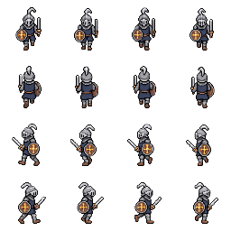

Dungeon Crawler · 2026-11-25 · OX-02 standalone focus preview · design v3
0x72 DungeonTileset II — connected low walls
Standalone file:// preview at the game's 1152×768 play size. Pack art is drawn at 4× screen (16px source tile → 64px world tile). The current 1.0.1 art is used only for the side-by-side comparison. No playable file is loaded or modified.
Controlled comparison · Wall fixtures · Complete character gallery · Items and effects · Directional knight · Size ledger · Missing work
Focus 1 · the proposal
Dungeon hero shot — fully revealed
Shared fixture: door panel, wall fires, banners, columns, chest, potions, sword, stairs, spikes, hero, custom cat and faithful ordinary-enemy candidates. The same restrained light and contact-shadow pass is applied to both styles. The closed door is mounted on blocked wall; it is not a promised walkable doorway.
Focus 2 · same fixture, same scale
Current 1.0.1 art vs the 0x72 direction
Identical 18×12 layout, camera, prop positions and lighting intent. The comparison is about material response, wall readability, actor scale and silhouette, not about matching every prop one-for-one.
Focus 3 · review views
Fog and grayscale
The same illustrative radial mask is applied to both styles. This is a controlled visibility comparison, not a claim to reproduce live tile-based fog or to validate gameplay secrecy. Grayscale checks wall/floor separation without hue.
Reference-derived player · preview only
Silver knight — four directions and walking poses
Steel helmet and silver crest, navy tabard, chainmail, boots, sword and wooden gold-cross shield follow the supplied reference. Four generated views, four distinct walking frames each. Exports use one scale and foot anchor; no floor or shadow is baked into the PNGs. Dark checkerboard below is CSS, not part of the images. Play updates both comparison scenes with the same global direction/phase; legacy actors without a direction retain their existing front-view fallback; it never runs gameplay.
All 16 transparent walking frames

Rows: front, back, left, right. Columns: four alternating stride/passing poses. Frame manifest · Generation prompts · Export notes
Focus 4 · wall topology
Do the wall rules survive real room shapes?
Eleven fixtures use the same normalized eight-neighbor rule as the comparison. Outside the map is solid; an obstacle remains floor. Red overlay labels blocked tiles, including corner cases. Every wall layer is clipped to its 16px source / 64px screen tile.
Focus 5 · town direction
Stone gate outpost — pack architecture only
This is not a grassy village mock-up. It is the stone gatehouse the pack can actually build: an open gate, jambs, torches, banners, a wall fountain and the pack's townsfolk. The current game's village, huts, trees, river, bridge and grass remain custom work; the pack offers none of them.
Focus 6 · proportions
Hero and monster scale against the 64px tile
This is the size decision the design document asked to review before final render bounds. The reference-derived knight has a 64×64 transparent source cell and a maximum 48px visible body height, drawn at 2× screen scale. The current hero is 64×88 screen. The older 0x72 candidate is retained only as a size reference. The 0x72 monsters are 32–64px wide and read as room-scale threats rather than small tokens.
Motion
Original pack reference frames
The new character loops are in the complete character gallery. These older 0x72 crops are retained only as source-pack reference and are not the selected character artwork.
Show original pack frame reference
Coverage
OX-01 role inventory and gap map
Loading…
Evidence